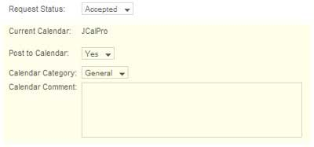
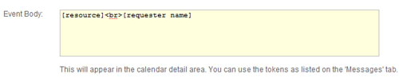
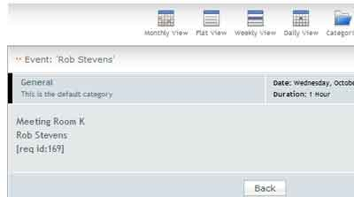

This screen is used to configure the component to your particular needs.
Save: Save changes.
Help: Opens this help screen.
Send email notifications TO: When a new booking request is created by the front-end screen, a notification is emailed to the address specified here. Note this can be overridden at the resource level, so different resources can send notifications to different addresses.
Email notification FROM address: Any emails sent from the component must have a FROM address. This should be the same domain as you web site. Example: if your web site is abc.com, the FROM must be somebody@abc.com or else you mail server may reject the outgoing mail as 'relayed' or spam.
Email notification SUBJECT: This will be the subject used in email notifications
HTML email: Yes = send HTML formatted email, No = send plain text emails.
Phone: Make the phone number a required input field / optional input field or hide it.
Email: Make the email address a required input field / optional input field or hide it.
Hide logo: Hide the Powered by.. link on the front-end screen.
Use DIV Calendar: Yes = use CSS div calendar, No = use popup window calendar, for date picker.
Date Picker Start Day: Date picker can be set to start on Sunday or Monday.
Limit User`s Daily Bookings: You can limit the maximum number of bookings a user can make. Only applies to logged in users so only usable with Login Required = Yes.
0 = NO LIMIT
Auto-Accept Bookings: Normally a booking 'request' is created, with the status of 'new', and notification is send to the address specified above. A designated administrator would make the decision to accept or decline the booking request. With Auto-Accept = Yes, the 'new' status is skipped and the booking as added with the status of accepted. This should be used with caution when running the control in Start/End mode as a malicious user could book from Dec 1 to Jan 31 and thereby lock up a resource until an administrator went in and canceled the booking.
Allow Cancellation: If set to 'Yes', a system generated, unique, code is created and added to the booking. You can add this code to the confirmation sent to the user via tokens (see Tokens on the Messages tab). With Allow Cancellation = Yes, a section will be shown, at the bottom of the booking screen, where the user can enter their cancellation code and have their booking canceled. This does not remove the booking, it just changes the status to 'cancelled' It will remove the booking from the calendar if one is in use.
up to x hours..: You can set a minimum time, before the booking, that cancellation will be accepted. For example, if you set it to 24 hours and the customer attempts to cancel 4 hours before, they will get a message saying cancellations are only allowed up to x hours before the booking starts. See Messages tab for setting the exact wording you want.
Time Format: You can specify the time format to be used on the front-end screen, either 24 hour or 12 hour +AM/PM. All internal times and administrator screens are in 24 hour format.
Header Text: Enter any information text that you would like to be displayed above the input fields of the booking screen.
Footer Text: Enter any information text that you would like to be displayed above the input fields of the booking screen.
ABPro can be set to work with either of two 3rd party calendars, JCalPro or EventList.
There is no direct connection between ABPro and the calendars, ABPro just adds/removes data from the calendar's tables. This means the communication is one-way, ABPro knows about the calendar but the calendar has no knowledge of ABPro. You cannot initiate a booking from the 3rd party calendar and have it talk to ABPro.
When a calendar is chosen, a section dealing with the calendar will appear in the booking details screen.

None: do not use a 3rd party calendar
Various 3rd party calendars supported.
Calendar Fields: 3rd party calendars have a 'title' and 'body' area. The title is what appears in the calendar cell, the body is what appears when you open a calendar date for details on the event. You can tell ABPro which field to put in which area.
Event Title: Choose either resource.name (name of the resource) or request.name (name of the requestor)
Event Body: This is what will be placed in the calendar body area. You can use tokens too insert booking information.
Daylight Savings Time: ABPro stores times in local time but some 3rd party calendars store in UTC (or GMT) and ABPro needs to convert local to UTC by using the Joomla time zone setting. Not everywhere in the world implements DST. This setting lets you tell ABPro if it should apply DST when converting to UTC.
These are the tokens available:
| Token | Will be replaced with | Token | Will be replaced with | |
| [resource] | name of the resource being booked | [resource_category] | the resource category | |
| [requester name] | the name of the requester | [resource_service] | the resource service | |
| [startdate] | start date of the booking | [phone] | the phone number of the requester | |
| [starttime] | start time of the booking | [email] | the email address of the requester | |
| [enddate] | end date of the booking | [cancellation_id]] | the system generated cancellation_id3 | |
| [endtime] | end time of the booking | [booking_total] | ||
| for UDFs | UDF example | |||
| [screen label] | the UDF label | [Favorite Fruit] | value entered by user for Favorite Fruit | |
Example:


These settings are used for the Graphic Availability Display booking screen only.
This display presents an alternate booking screen in which the user chooses a timeslot from a table of available slots.
Default Grid Start Time: The user can adjust the grid or table of timeslots to display an appropriate range of hours. This setting is the default when the screen opens.
Default Grid End Time: The user can adjust the grid or table of timeslots to display an appropriate range of hours. This setting is the default when the screen opens.
Hide Gird Start/Stop controls: Yes=Do not show the grid start/end dropdown lists on the GAD screen. The grid will be fixed at the values above.
Grid Start Day: Today = Grid will start with today's date,
Tomorrow = Grid will start with tomorrow's date, x days from now = Grid will start at x days from now.
Specific date = Grid will start at the selected date
Grid Width: This is the width of the timeslots grid. You may need to adjust this to work with your template. This must be a number of pixels, not a percentage, as the system must calculate a ratio of pixels to grid minutes for resizing grid. (default is 700)
Name Width: This is the with of the Y-Axis for the availability table. Either date or name. Again, it must be a number of pixels not a %. (default is 100)
Available Time Slot image: You can specify an image to be shown in the available timeslots. This is a path to image, example: "./administrator/images/tick.png"
Booked Time Slot image: You can specify an image to be shown in the booked or unavailable timeslots. This is a path to image, example: "./administrator/images/publish_x.png"
The colors for this screen are set in the css file and can be tailored to you site.
Number of days to show: When viewing by resource, this sets the number of days to show in the grid. Default is 7. More days = longer screen and slower response as more days need to be calculated and added to the grid.
Show Seats Available: Instead of a checkmark indicating a free timeslot, show the number of available seats.
This screen is where you set ABPro to use Clickatell.com for sending SMS text messages.
You must have an account with Clickatell.com.
The data for this screen comes from your Clickatell.com account’s ‘Manage My Products’ page.
You should ensure you account is functioning properly before incorporating it into ABPro.
DO NOT enable both Clickatell AND EzTexting.
This service should be used is you are outside of the United States. (Clickatell no longer works in the USA)
This screen is where you set ABPro to use EzTexting.com for sending SMS text messages.
You must have an account with EzTexting.com.
You should ensure you account is functioning properly before incorporating it into ABPro.
DO NOT enable both Clickatell AND EzTexting
This service can be used for USA or Canada only.
Use this screen to set which tabs appear in the front end Advanced Admin screen.


ABPro has a built in Shopping Cart facility which allows a customer to choose one or more booking timeslots and processing them in a single transaction.
If you Enable the shopping cart, the buttons normally found on the booking screen are replaced by ‘Add to Cart’ and ‘View Cart’ buttons.
When the user selects a timeslot and clicks on ‘Add to Cart’, a ‘pending’ booking is added to the system so the slot is captured for them. The pending booking will be held for a limited time, then removed from the cart and made available to others if the customer does not finish their order. The amount of time to hold the slot is set in the Payment Processors screen as ‘Purge Stale Bookings’.As the cart processes multiple bookings in one transaction, the normal booking specific confirmation massages cannot be used. This screen lets you setup cart specific messages.
The confirmation is built by taking the header + per/booking confirmation message + footer. If you have 3 slots being booked, there will be one per/booking message inserted for each slot. These can contain booking specific tokens. See the bottom of the Messages tab for tokens available.
ABPro features not currently compatible with the shopping cart are:
Joomla 3 offers less admin screen real-estate due to the left menu imposed by the J-Team. This screen lets you turn on/off columns in the Appointments screen to make most efficient use of available space.